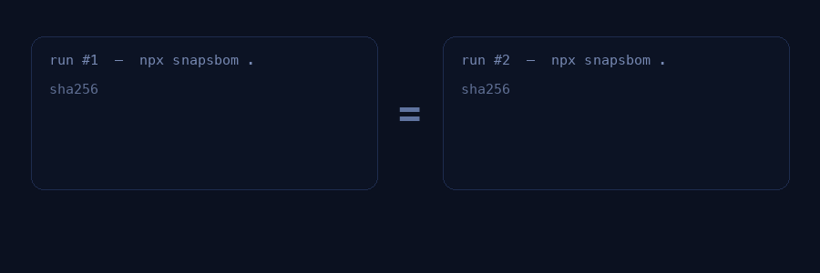

01
Deterministic by design
Fixed timestamps, sorted keys, canonical IDs. Identical input produces identical output — forever.
Point SnapSBOM at your lockfile and get a standards-compliant SPDX or CycloneDX document in milliseconds — computed entirely on your machine, with zero network calls and output that is byte-for-byte reproducible.
Most SBOM tools stamp the current time, walk the tree in arbitrary order, and hand out random identifiers — so every run produces a different file. SnapSBOM emits a canonical document instead, which makes an SBOM something you can actually verify.
The document’s created field is fixed, not “now”, so re-runs never drift.
Packages are deduplicated by purl, sorted, and numbered SPDXRef-Package-1…N predictably.
Field ordering is fixed, so a line-level diff between two SBOMs is meaningful.
Hashes match, or they don’t. No heuristics, no “close enough”.

Emit either ecosystem’s format without changing anything else. The core, the parsing and the canonical ordering are identical — only the serialisation differs.
"spdxVersion": "SPDX-2.3",
"SPDXID": "SPDXRef-DOCUMENT",
"dataLicense": "CC0-1.0",
"name": "SnapSBOM SBOM",
"creationInfo": {
"created": "2026-01-01T00:00:00Z",
"creators": ["Tool: SnapSBOM"]
},
"packages": [
{
"SPDXID": "SPDXRef-Package-1",
"name": "@types/node",
"versionInfo": "22.10.2",
"externalRefs": [{
"referenceType": "purl",
"referenceLocator": "pkg:npm/%40types/node@22.10.2"
}]
}
]"bomFormat": "CycloneDX",
"specVersion": "1.6",
"version": 1,
"components": [
{
"type": "library",
"name": "@types/node",
"version": "22.10.2",
"purl": "pkg:npm/%40types/node@22.10.2",
"supplier": { "name": "NOASSERTION" },
"licenses": []
}
]Fixed timestamps, sorted keys, canonical IDs. Identical input produces identical output — forever.
Zero network calls, zero telemetry. Runs offline, in CI, and in air-gapped environments.
The same Rust core powers the CLI and the browser build, so both agree exactly.
Emits valid SPDX 2.3 and CycloneDX 1.6 JSON with canonical, reproducible formatting.
Parses lockfiles directly — no source scan, no container, no Docker. Milliseconds, not minutes.
A single static binary, or a one-line npx. Nothing to configure to get a valid SBOM.
Locate and parse the lockfile — no source tree walk, no build step.
Build the component set, deduplicate by purl, sort, and pin stable IDs.
Serialise to SPDX 2.3 or CycloneDX 1.6 with a stable key order.
Write to stdout or a file. Drop it straight into CI as a build artifact.
One Rust crate compiles twice — as a CLI (via clap) and as a WebAssembly module (via wasm-bindgen) — which is why the terminal and the browser produce identical documents.
SnapSBOM is deliberately honest about scope: it guarantees correctness for npm lockfiles, and grows one ecosystem at a time.
| Ecosystem | Lockfile | Status |
|---|---|---|
| npm | package-lock.json (v2 / v3) | supported |
| pnpm | pnpm-lock.yaml | roadmap |
| Yarn | yarn.lock | roadmap |
| Python | poetry.lock · requirements.txt | roadmap |
| Cargo | Cargo.lock | roadmap |
No secrets, no network, no external service. Generate an SBOM and attach it to the build.
$ snapsbom --help Usage: snapsbom [OPTIONS] <PATH> <PATH> lockfile or directory Options: --format <FORMAT> [default: spdx] values: spdx, cyclonedx --output <OUTPUT> stdout if omitted -h, --help -V, --version # examples $ snapsbom . $ snapsbom . --format cyclonedx $ snapsbom . --output sbom.spdx.json
name: SBOM on: { push: { branches: [main] } } jobs: sbom: runs-on: ubuntu-latest steps: - uses: actions/checkout@v4 - uses: actions/setup-node@v4 with: { node-version: 20 } - name: Generate SBOM run: npx --yes snapsbom . \ --format cyclonedx \ --output sbom.cdx.json - uses: actions/upload-artifact@v4 with: name: sbom path: sbom.cdx.json